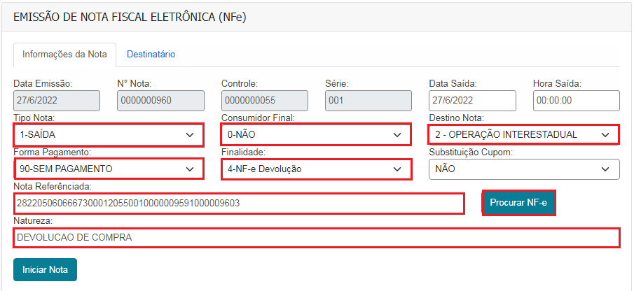
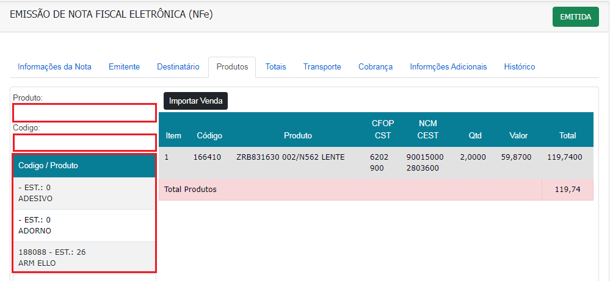
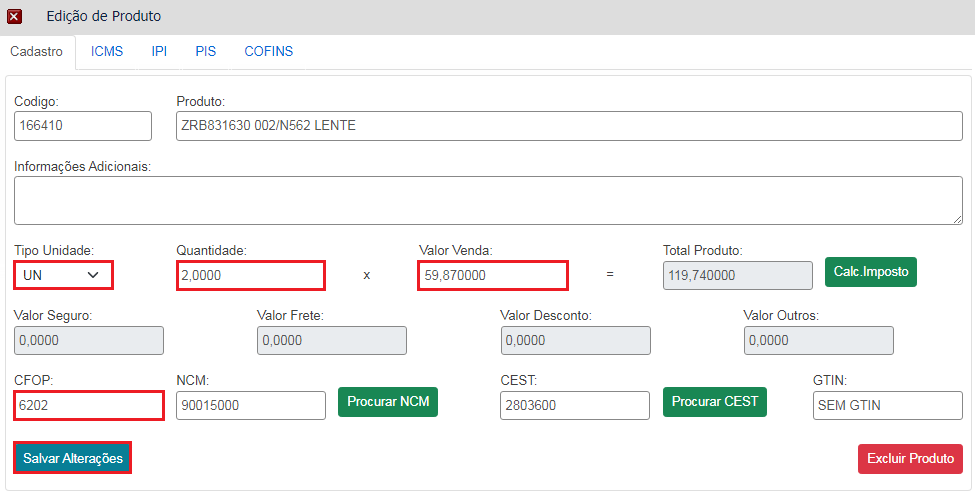
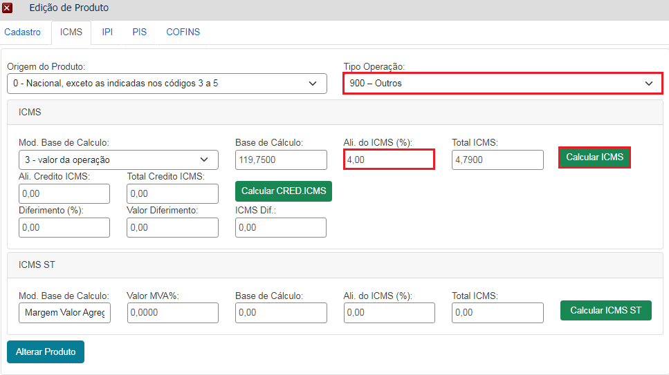

Informações da Nota
Na parte lateral esquerda vai clicar no botão “Nota Fiscal (NFe) > Incluir ”, em seguida vai inserir as seguintes informações:
Tipo Nota: Na situação de devolução de compra, vai sempre utilizado como saída.
Forma de Pagamento: Não haverá pagamento para esse tipo de operação. Então deixar a opção "Sem Pagamento".
Consumidor Final: Deixar a opção "Não", o emissor da nota de compra (quem te vendeu) ele sempre vai ser pessoa Jurídica
Destino nota: Operação Interna para Fornecedor dentro do estado, Operação Interestadual para Fornecedor fora do estado.
Finalidade: Vai ser utilizado apção “NF Devolução” para notas de devolução.
Substituição Cupom: Vai ficar marcado como "Não"
Natureza: A natureza da nota vai ser "Devolução de compra".
 Destinatário
Campos obrigatório para preenchimento no formulário de cadastro para a emissão de nota será:
Tipo de Cliente: Pessoa Jurídica
Tipo de contribuinte: “Contribuinte ICMS, pessoa Jurídica (Informar Inscrição Estadual no campo ao lado do CNPJ).
Razão Social:Nome da empressa ou pessoa.
CNPJ/CPF: Informar o CNPJ
Endereço: Informar CEP, Endereço, Numero, Bairro, Bairro, Estado e Cidade.
Em seguida clicar no botão de “Iniciar Nota”.

Produtos
Para inserção dos produtos, basta pesquisar o produto desejado utilizando o campo "Produto", onde a pesquisa pode ser feita utilizandoa descrição ou parte da descrição. E o campo "Código”, vai realizar a pesquisa a partir do código do produto, definido na hora do cadastro, em seguida vai clicar no produto desejado, onde será aberto uma janela para colocar a quantia a ser vendida, o valor e CFOP de operação.
 Inclusão de Produtos (Cadastro)
Após selecionar o produto será exibida essa janela para ser inserida a “quantidade, Valor de venda, CFOP” após ter essas informações clicar em incluir. Lembrando que o CFOP ser incluso nos Produtos será o CFOP 6202 caso o cliente seja de fora do estado. Caso não saiba qual CFOP utilizar em outras situações basta clicar aqui emTABELA CFOP. Será feito esse procedimento para os demais produtos, caso a nota seja composta por mais de um.
 Inclusão de Produtos (ICMS)
Depois que as informações do produto for preenchida na aba de cadastro como ensinado anteriormente se faz necessário dar uma conferida na aba de ICMS. Caso se faça necessário o destaque de ICMS na nota de devolução, será necessário realizar alterações nessa aba de ICMS. Para isso você vai alterar o Tipo de Operação, deixando selecionada a opção "900 - Outros" e verificar a inofrmação na nota de compra qual a "Aliquota de ICMS" e no campo Ali. do ICMS(%) colocar o valor correspondente ao que está na nota, em seguida clicar no botão "Calcular ICMS". Já que a nota de devolução é basicamente um espelho da nota de compra.
 Emissão de Nota
Depois de todos os produtos inseridos só será necessário clicar no botão SALVAR, para que as informações sejam salvas, em seguida no botão EMITIR NOTA. Na imagem abaixo eu deixei em destaque mais dois botões que o botão CANCELAR NOTA e INUILIZAR NOTA. O botão de cancelar nota, como a descrição já diz vai ser utilizado quando necessário cancelar a nota, esse cancelamento só é permitido se realizado em até 24 horas. Após esse período será necessário realizar uma Nota de Devolução. Já o botão inutilizar é utilizado quando a nota é gerada e precisa ser cancelada antes mesmo da emissão.